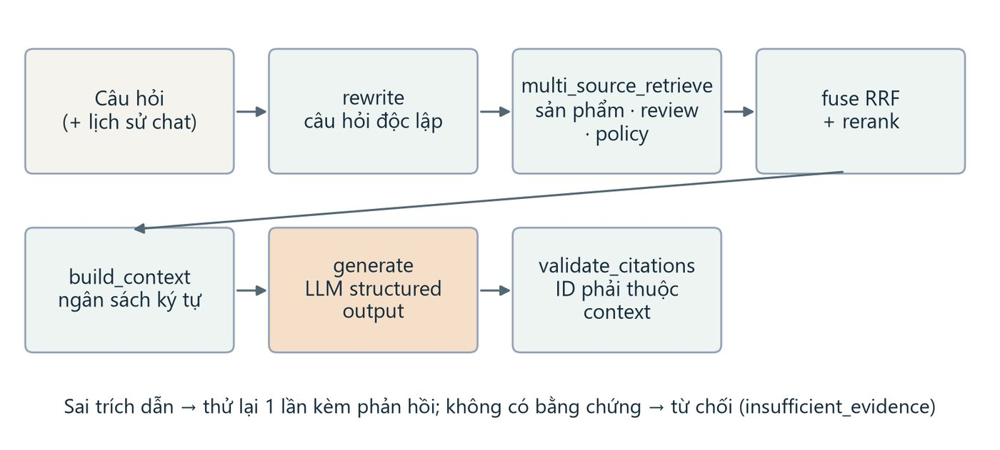

RAG Case Study: From Retrieval to Real-World Applications
A walkthrough of retrieval-augmented generation from the retrieval mechanics up to what it takes to put a RAG system in front of real users. Published on LinkedIn.

About this article
This one is published on LinkedIn — use the button above to read it in full.
It covers retrieval-augmented generation from the retrieval mechanics through to what changes when a RAG system has to serve real users rather than a demo.
Why I wrote it
RAG is the part of applied AI where the gap between a demo and a usable system is widest. Getting a model to answer from your documents takes an afternoon. Getting it to answer correctly, to cite evidence you can verify, and to say "I don't know" when the evidence is not there — that is the actual engineering, and it is mostly retrieval work rather than model work.


I build these systems as well as write about them. ShopMind is the one I keep returning to: multimodal retrieval over a product catalogue, citations validated against the context actually sent to the model, an explicit refusal path when evidence is insufficient, and a glass-box inspector that shows every pipeline step.
Note: the summary on this page is deliberately short, because the full article lives on LinkedIn. If you would rather read it here, I can republish the text on this site.
Want the detail behind this?
Happy to walk through the technical decisions in a conversation.